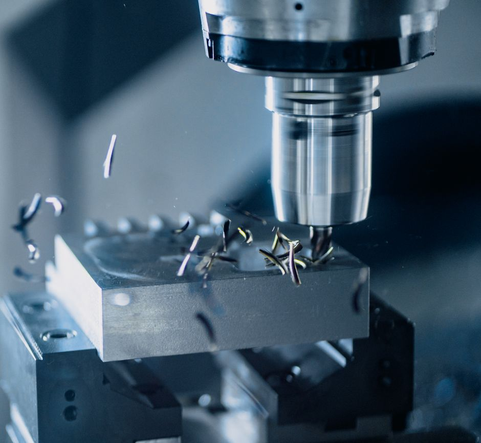
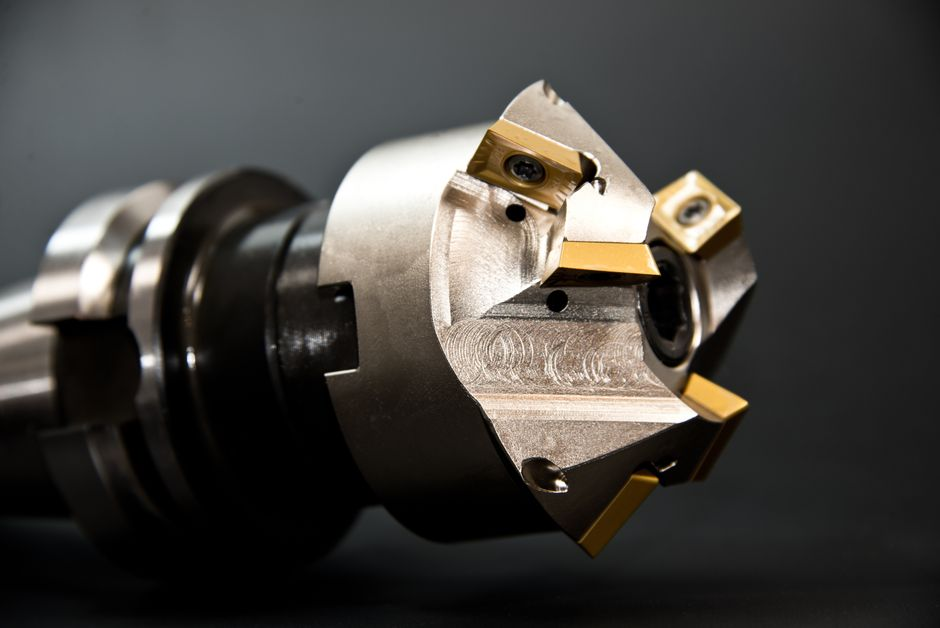
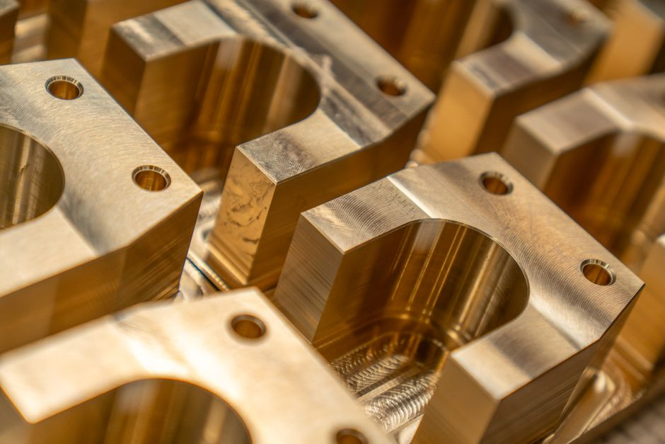

From metallurgical analysis to the final polished impression, every stage of your die or component is controlled inside our toolroom — so quality is never left to a third party.
We design and manufacture forging dies for high-volume automotive and industrial components, engineered to withstand thermal fatigue and impact load over thousands of strikes.
Our machining cell handles complex geometries and tight tolerances on hardened tool steels, alloy steels and non-ferrous materials — for both tooling and finished components.


Before a single chip is cut, we analyse the service requirements of your component and select a die steel and heat-treatment that match the load, temperature and wear it will see.
Hand polishing with diamond paste, lapping and stoning brings each impression to a mirror finish — improving part release, surface quality and the number of parts a die can produce before service.

Send us a worn or broken part. We measure, model and manufacture a replacement to original spec — ideal for legacy pumps, obsolete spares and urgent breakdown support.
Tell us what you're trying to make — we'll confirm if it's within our scope, honestly.